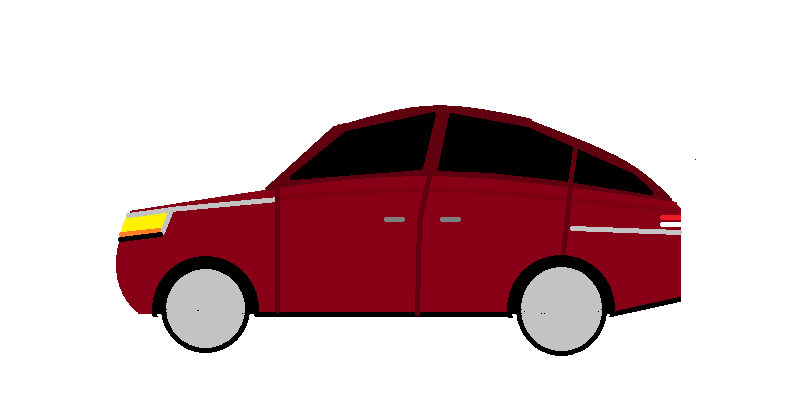

Site de gestion de l'auto-école
Faster than police. Ce site permet de gérer les séances de code de la route, avec les thèmes abordés ainsi que les étudiants.
Faster than police

Ne pas oublier que les incertitdes compteur sont de 5-10% de la viesse réelle, et que la tolérance des radars est autour de 5km/h.
Un rond point se prend également plus vite au frein à main, quoique la trajectoire est plus incertaine.